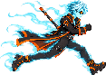
Hauntly Heck
An eight-direction dash during which Hux turns briefly spectral, slipping through attacks, enemies and ghostly barriers.
Huxley "Hux" Heck is in his first year as a supernatural hunter.
A year ago he inherited the Heck family fortune, its secrets, and Heck Tech, the family's technology for fighting the supernatural. Now he has come to the small town of Weeping Willow in search of a legendary book, The Codex Gigas, hoping it holds answers about the Hex on his family.
He arrives to find the town seized by a wicked Priest and his monsters. When he meets parents whose daughter has been taken, Hux promises to bring her home. With his assistant Circe flying support overhead in the Heckopter, he pushes from the haunted streets into a nightmare of carnivals, graveyards, catacombs and cathedral halls.
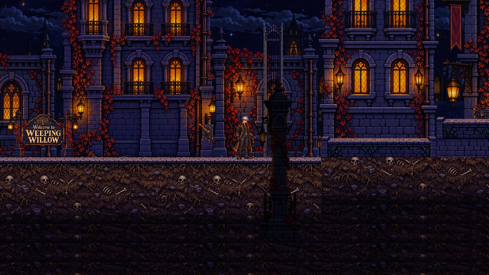
Fast, readable combat in the spirit of modern action-platformers, with powers that open new routes and solve the town's puzzles.

An eight-direction dash during which Hux turns briefly spectral, slipping through attacks, enemies and ghostly barriers.
Hux's spirit leaves his body to possess a monster and use its abilities to fight, travel and solve puzzles. His empty body stays behind, and the other monsters go after it.
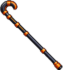
A family heirloom and Hux's signature weapon: a five-strike combo, up and down strikes, and a grapple that swings, climbs and pulls monsters in.
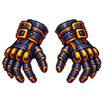
Heck GlovesClose-combat gauntlets: three fast punches.
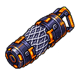
Heck MeshA thrown trap that holds ordinary monsters.
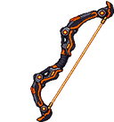
Heck BowLimited shots for distance.
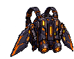
Heck WingsFlight at any angle, and a dive.
Heck GogglesNight vision that reveals secrets and which monsters can be possessed.
No grindingNo skill trees or stat upgrades: progress comes from skill and story.
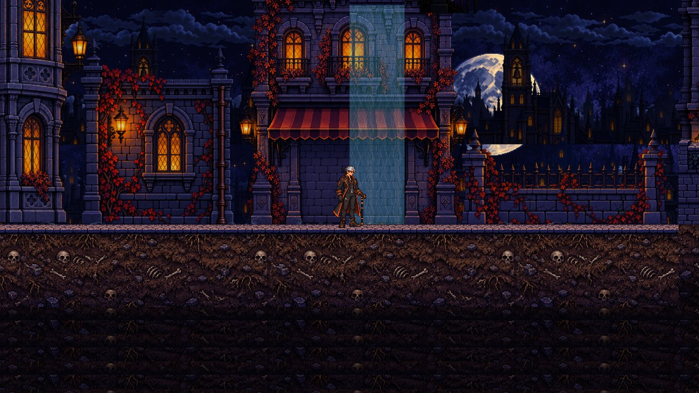
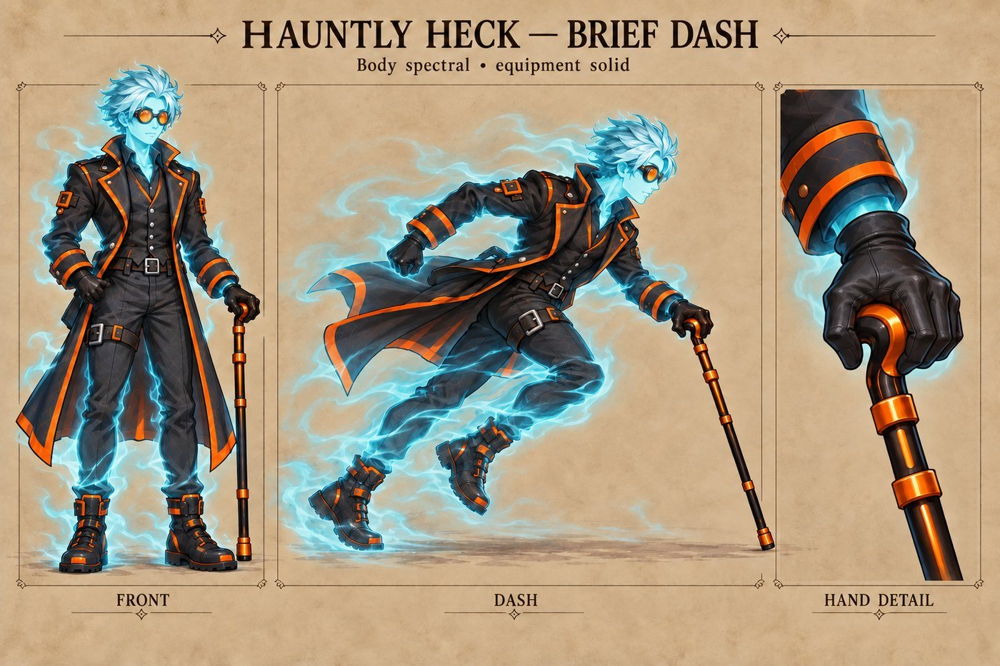
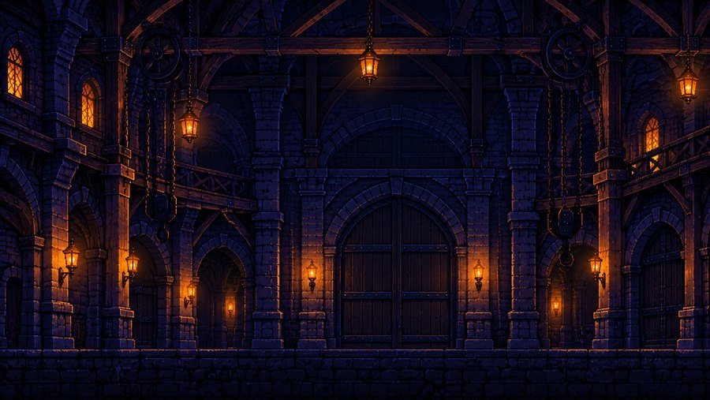
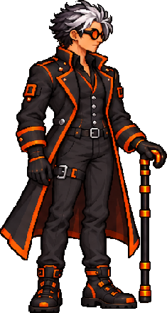
Heir to the Heck family and its Heck Tech, Hux has chosen to spend his life and fortune investigating the supernatural, determined to find a cure for the curse that took his parents.
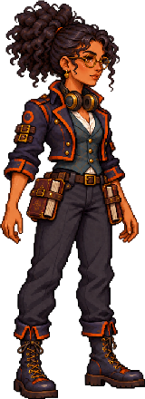
Hux's assistant, a studying sorceress who flies support in the Heckopter. Her knowledge and loyalty keep Hux and the people of Weeping Willow safe.
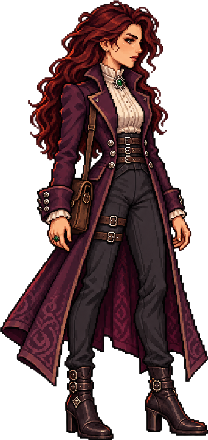
A mysterious visitor Hux encounters. She claims she's in town on business.
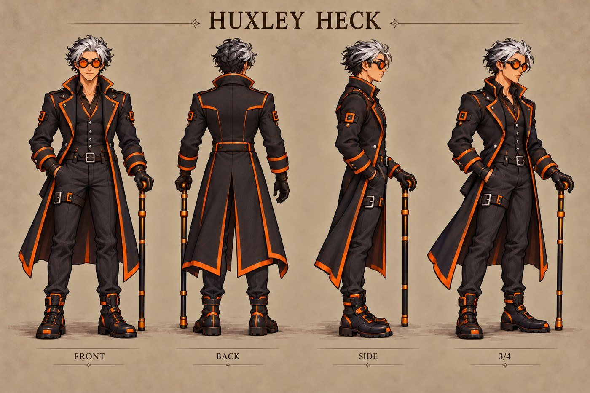